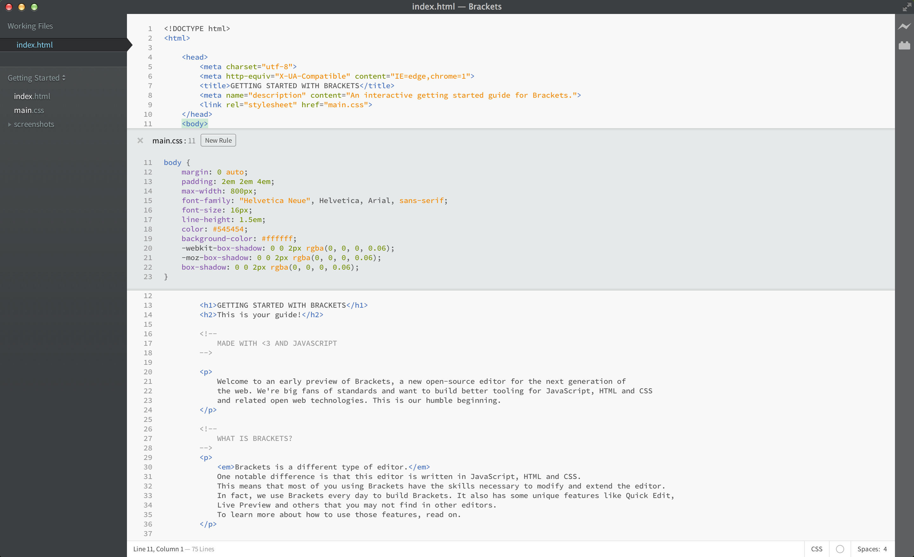

Benvingut a una versió preliminar de Brackets, un nou editor de codi obert per a la nova generació d'Internet. Som uns apassionats dels estàndards i volem construir millors eines per a JavaScript, HTML, CSS i la resta de tecnologies web. Aquest és el nostre humil començament.
Brackets és un editor diferent. La gran diferència és que està escrit en JavaScript, HTML i CSS. Això vol dir que la majoria de les persones que fan servir Brackets tenen les habilitats necessàries per a modificar i expandir aquest editor. De fet, nosaltres el fem servir diàriament per a desenvolupar Brackets. També té algunes característiques úniques com per exemple l'Edició Ràpida, el Desenvolupament en Temps Real i més eines que no trobaràs en altres editors. Segueix llegint per a aprendre com treure-li profit a aquestes característiques.
Ja no hauràs de saltar de document en document perdent de vista el que estàs fent. Mentre escrius HTML, fes servir la drecera Cmd/Ctrl + E per obrir l'editor d'edició ràpida en línia amb tot el contingut CSS relacionat amb l'etiqueta, ID, o classe seleccionada. Ajusta el teu CSS i pressiona ESC per a tornar al HTML, o simplement manté les normes CSS obertes perquè passin a formar part del teu editor HTML. Si pressiones ESC fora de l'editor ràpid, aquest es tancarà.
Vols veure'l funcionant? Col·loca el cursor sobre l'etiqueta i fes Cmd/Ctrl + E. Hauries de veure l'editor ràpid de CSS més amunt, mostrant la norma CSS que l'afecta. L'edició ràpida funciona també amb ID i classes. Pots crear noves normes de la mateixa manera. Fes clic en una de les etiquetes que hi ha més amunt i fes Cmd/Ctrl + E. Encara no hi ha cap norma per a aquest element, però pots fer clic en el botó Nova Norma per a afegir una nova norma a les etiquetes . També pots fer servir la mateixa drecera per a editar altres coses (com, per exemple, funcions en JavaScript, colors i funcions de temporització d'animacions) i estem afegint més i més novetats contínuament. Ara mateix, no es poden niar editors en línia, així que només pots fer servir l'Edició Ràpida quan el cursor es troba dins l'editor "complet".
Coneixes el ball de "guardar/recarregar" que portem fent des de fa anys? Aquell en el que fas canvis en el teu editor, guardes, vas al navegador i recarregues per a poder veure el resultat? Amb Brackets, això s'ha acabat!
Brackets obrirà una connexió a temps real amb el teu navegador i li enviarà els canvis de l'arxiu HTML i CSS mentre escrius codi! Pot ser que ja facis quelcom similar amb les eines de desenvolupament del navegador, però amb Brackets ja no necessites copiar i enganxar el codi final un altre cop a l'editor. El teu codi s'executa en el navegador, però viu en el teu editor!
Brackets t'ajuda a veure com els canvis en HTML i CSS afecten la teva pàgina. Quan el cursor es trobi sobre una norma de CSS, Brackets destacarà tots els elements afectats al navegador. De la mateixa manera, quan estiguis editant un arxiu HTML, Brackets també destacarà els elements corresponents en el navegador.
Si tens instal·lat Google Chrome, pots probar-ho tu mateix. Fes clic sobre la icona del llamp de la cantonada superior dreta o pressiona Cmd/Ctrl + Alt + P. Quan el Desenvolupament en Temps Real està funcionant en un document HTML, tots els documents CSS relacionats es poden editar en temps real. La icona passarà de gris a daurat quan Brackets estableixi una connexió amb el navegador. Ara, col·loca el cursor sobre l'etiqueta que es troba una mica més amunt. Observa com apareix el ressaltat blau al voltant de la imatge en el navegador. Després, utilitza Cmd/Ctrl + E per a obrir les normes de CSS existents. Intenta canviar la mida del 'border' de 10 a 20 píxels, o el color del fons de "transparent" a "hotpink". Si Brackets i el navegador estan funcionant en paral·lel, veurà els canvis instantàniament en el navegador. Genial, ¿no?Actualment, Brackets només suporta Desenvolupament en Temps Real per a HTML i CSS. Tot i així, en la versió actual, els canvis en arxius JavaScript són detectats i recarregats automàticament en el navegador quan guardes. En aquests moments estem treballant per a afegir suport per al Desenvolupament en Temps Real per a JavaScript. A més, les actualitzacions automàtiques només són possibles amb Google Chrome, però esperem poder traslladar pròximament aquesta funcionalitat a tots els grans navegadors.
Per a aquells que encara no han memoritzat les equivalències de color entre Hex i RGB, Brackets permet veure exactament quin color s'està fent servir ràpidament. Tant en CSS com en HTML, simplement posa el cursor sobre qualsevol valor de color o gradient i Brackets mostrarà una previsualitzaciò d'aquest de manera automàtica en Brackets, i aquest mostrarà una vista en miniatura de la imatge corresponent.
Per a provar la previsualització, col·loca el cursor sobre l'etiqueta al principi d'aquest document i pressiona Cmd/Ctrl + E per a obrir un editor CSS. Ara, simplement mou el ratolí sobre qualsevol dels colors dins del CSS. També pots veure'l funcionant en gradients obrint un editor de CSS en l'etiqueta passant el cursor per qualsevol dels valors per a les imatges de fons. Per a provar la vista prèvia d'imatges, col·loca el cursor sobre la imatge amb la captura de pantalla inclosa abans en aquest document.A més de totes les funcions de Brackets, la nostra amplia comunitat de desenvolupadors d'extensions n'ha creat més d'un centenar que afegeixen funcionalitats útils. Si hi ha alguna funcionalitat que necessitis i que Brackets no ho suporti, és molt probable que algú hagi construït una extensió per a aconseguir-la. Per a navegar o buscar en la llista d' extensions disponibles, selecciona arxiu > Gestionar extensions... i fes clic en la pestanya "Disponibles". quan trobis una extensió que vulguis afegir, simplement pressiona el botó "Instal·lar" que hi ha a la dreta.
Brackets és un projecte de codi obert. Desenvolupadors web de tot el món están contribuint a construir un millor editor de codi. Fes-nos saber què en penses, comparteix les teves idees o contribueix directament en el projecte.